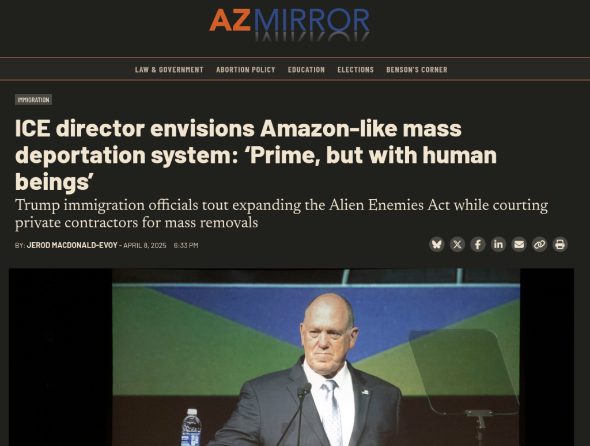

17/04/25
Você não terá nada e será pago por isso 🙂
Mais um excelente uso pra inteligência artificial (sqn!)
Queima mercado de ações / Tarifas e Soberania dos Chips
Tarifas do Trump são tipo:
- NVIDIA anuncia a abertura de fábricas no Texas. É possível que isso não seja 'de agora', mas vitória para o governo Trump, certo?
- Porém hoje os mercados deram uma balançada com a NVIDIA caindo uns 6% porque os EUA resolveu restringir a exportação dos chips H20 (feitos especialmente para serem exportados para a China)
- Ainda existem dúvidas se a produção feita nos EUA será de chips de alta geração (ai 'gear', ai 'infrastructure')
- Esses chips serão apenas para o mercado interno? As tarifas recíprocas não podem machucar a venda desses chips para OUTROS PAÍSES?
Resposta da China às tarifas / bloqueios
- China está considerando a origem de fabricação como a variável para aplicar tarifas, ou seja, fábricas de chips em Taiwan, India ou qualquer outro país não terão as tarifas dos EUA
- E se NVIDIA e AMD colocarem mais da sua produção lá pra perto da China?
- Fabricantes como a Huawei já estão lambendo os beiços. A ideia é que isso possa acelerar o desacoplamento da dependência chinesa dos chips americanos
GPUs chinesas?
Banimento da Deepseek de novo!
https://techcrunch.com/2025/04/16/trump-administration-reportedly-considers-a-us-deepseek-ban/
O hacker conhecido como "4chan" foi hackeado
- Em resumo o desquerido fórum anônimo mais famoso da internet foi hackeado por membros de uma 'facção' rival chamada 'Sojyjack Party'
- É um fórum concorrente que se separou do 4chan depois do banimento do fórum '/qa' onde estes usuários criaram a subcultura de spammar os memes de soyjack
- É uma subcultura dos fórum chans com sua própria idioglossia, rituais e piadas internas e aparentemente essa rivalidade e o hack já vinham sendo planejados há muito tempo
- No momento desta gravação o fórum está caído e provavelmente não irá voltar tão cedo
- Outra coisa interessante é que aparentemente o 4chan usava uma versão antiga do sistema de fórum phpBB e uma versão do PHP de pelo menos 2016 então devem ter rodado em alguma falha de segurança simples
- Coisas que foram vazadas de interesse (suposto, não temos certeza):
- Fotos da interface administrativa
- Email dos admins, moderadores e 'janitors'
- Código fonte do site
- IPs de usuários
- Existe muita especulação sobre a potencial ligação de admins do site com o governo dos EUA o que seria condizente com o papel desses fóruns de agitação de atividades ilegais e ligadas à extrema direita, porém não temos confirmação nenhuma
https://www.404media.co/4chan-is-down-following-what-looks-to-be-a-major-hack-spurred-by-meme-war/
Recomendação de vídeo
A tecnologia que alimenta um genocídio
Durante uma apresentação de Mustafa Suleyman, CEO da Microsoft AI, focada no futuro do aplicativo de IA da empresa, Copilot, Aboussad interrompeu a plateia.
"Mustafa, que vergonha! Você afirma que se importa em usar a IA para o bem, mas a Microsoft vende armas de IA para o exército israelense", disse ela, atraindo a atenção de todos.
Vaniya Agrawal interrompeu uma sessão de perguntas e respostas com os ex-CEOs Bill Gates e Steve Ballmer, bem como o atual CEO de origem indiana, Satya Nadella. "Que vergonha! Vocês são todos hipócritas. Sou funcionária da Microsoft e não consinto", disse ela, dirigindo-se diretamente à liderança da gigante da tecnologia.
- A Microsoft possui um contrato de 133 milhões de dólares para o uso da sua infraestrutura de IA pelo exército israelense
https://noazureforapartheid.com/
O país mais democrático do mundo

União sinistra das Big techs com o fascismo pt. 2
https://www.404media.co/this-college-protester-isnt-real-its-an-ai-powered-undercover-bot-for-cops/
A volta da "iniciativa chinesa" de Trump
https://www.wired.com/story/professor-xiaofeng-wang-update/
Governo Trump pressionando instituições acadêmicas
- Eu não repercuti aqui mas aconteceu um movimento parecido de chantagem e pressão pra cima de agências de advocacia que representaram ações contra o governo Trump
A invasão do NLRB pelo DOGE
https://www.npr.org/2025/04/15/nx-s1-5355896/doge-nlrb-elon-musk-spacex-security
-
Uma denúncia alega que o DOGE, liderado por Elon Musk, causou uma violação de segurança na NLRB. Cerca de 10 GB de dados sensíveis foram supostamente extraídos dos sistemas da NLRB.
-
Os dados incluíam informações sobre atividades sindicais e segredos comerciais.
-
Os técnicos do DOGE teriam desativado ferramentas de monitoramento e apagado registros de acesso.
-
Tentativas de alertar a CISA foram supostamente obstruídas por altos funcionários da NLRB.
-
O whistleblower recebeu ameaças após relatar o incidente. Uma nota colada em sua porta com fotos suas passeando com seu cachorro.
-
O incidente ocorre enquanto SpaceX e Amazon desafiam a constitucionalidade da NLRB.
-
Elon Musk tem um histórico de perseguição a whistleblowers de suas empresas
Recomendação de vídeo
Em resumo
- O governo Trump tem um padrão fartamente estabelecido de perseguição dos seus oponentes políticos
- As políticas "anti imigrantes", "antigangues" e "antiterrorismo" e "anti antisemitismo" são uma desculpa para a deportações indiscriminadas e sem nenhum processo legal. El Salvador fica feliz de servir de campo de concentração para os EUA
- DOGE é um cavalo de Tróia que com o discurso de 'eficiência' está demitindo qualquer tipo de funcionário de carreira que não seja um trumpista convicto e desmontando sistemas de monitoramento e transparência internos.
A infra da internet está doente de EUA
- Nós quase perdemos o sistema de CVE por que o governo Trump só resolveu que não ia mais financiar...
- O pessoal responsável resolveu às 23:55 criar uma espécie de fundação pra desacoplar isso do orçamento dos EUA
https://www.thecvefoundation.org/
-
Por que esse tipo de coisa está na mão dos EUA?
-
Que outras peças da nossa infraestrutura global estão na mão do império em decadência. Me ajuda xét:
- Governança da Internet
- Computação em Nuvem e Hospedagem de Dados
- Pagamentos Globais e Sistemas Financeiros
- Plataformas de Mídias Sociais
- Cadeias de Suprimentos de Hardware
- Segurança Cibernética e Certificados
- Infraestrutura de Satélites
Administração Trump tá de olho na CISA
https://krebsonsecurity.com/2025/04/trump-revenge-tour-targets-cyber-leaders-elections/